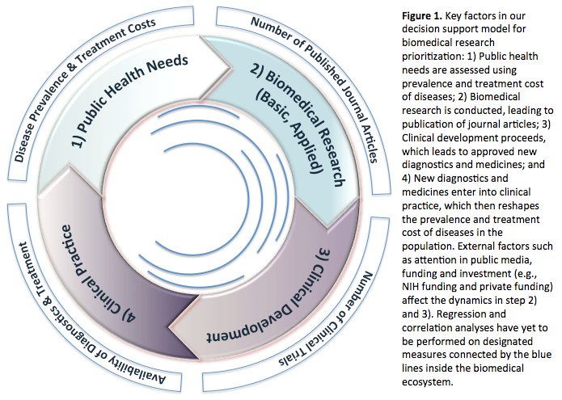
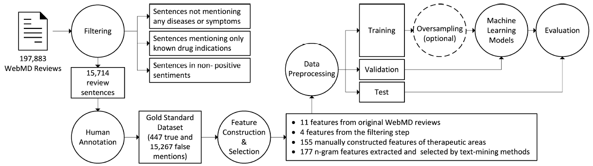
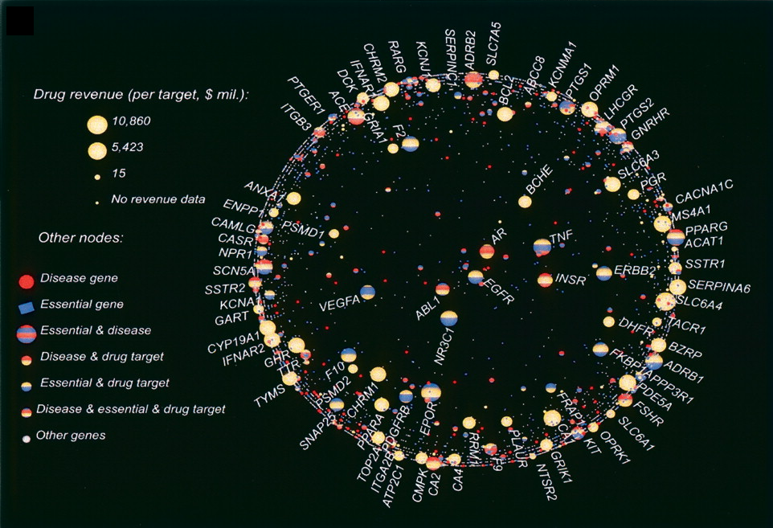

<div class="inside">
<div>
  <h3><strong>Research Philosophy:</strong></h3>
  <p>Biology and medicine are still in the rudimentary stage of accumulating observations and knowledge piece by piece. Scientists desire to discover new universal laws and principles like Darwin's theory, based on the observational data scattered all around. We strongly believe that data-driven computational approaches, complementary to classical hypothesis-driven approaches, have the potential to go beyond any single human expert's capability of comprehension and interpretation. They are very useful for discovering patterns or rules and filling ignored niches in the current biomedical knowledge system. Our long-term research goal is to develop and apply artificial intelligence approaches (e.g., machine learning, data mining and natural language processing) to analyze the tremendous amount of <strong>structured and unstructured textual data</strong> (e.g., electronic health records, medical claims, literature, patents, and social media data), in order to (a) uncover new biomedical knowledge and (b) improve <a href="https://catalyst.nejm.org/what-is-patient-centered-care/"><strong>patient-centered care</strong></a>. </p>
  <p>Currently, our lab is working on three major topics: </p>
  <ul>
      <li>
          <h4>
            Quantifying unmet medical needs</h4>
      </li>
        <p>Even as population health improves and longevity increases globally, there will always be more biomedical problems than solutions. Strategically prioritizing and allocating the limited societal resources to discover and develop cost-effective pharmaceuticals, medical devices and other diagnostics for diseases and medical conditions with the highest return on investment motivates many governmental and private funding agencies, pharmaceutical and biotech companies, clinicians, and scientists. Unfortunately, due to the complexity of the biomedical research ecosystem and the scarcity of relevant data, no systematic studies have been done to comprehensively survey the past allocation of resources (funding, attention from the scientific community and clinical development, for example) or guide the future redistribution of resources for maximal societal benefit. We develop quantitative metrics, namely disease-specific Research Opportunity Index (ROI) and Public Health Index (PHI), to gauge the imbalance between the disease burden associated with a particular disease or all medical conditions as a whole and the associated resource allocation over time, which is a critical step for various stakeholders along the health care value chain to better distribute resources and prioritize efforts. This project is funded by The National Library of Medicine (5K01LM012102).</p>
        <p></p>
        <p>Health ROI as a measure of misalignment of biomedical needs and resources. L Yao, Y Li, S Ghosh, JA Evans, A Rzhetsky. Nature Biotechnology 33(8), p807-811, 2015</p>
        <p>Estimating disease burden using Google Trends and Wikipedia data. R Qiu, M Hadzikadic, L Yao. International Conference on Industrial, Engineering and Other Applications of Applied Intelligent Systems. Conference Proceeding. p374-385, 2017
        </p>
        <p>DIR--A semantic information resource for healthcare datasets. J Shi, M Zheng, L Yao, Y Ge. The IEEE International Conference on        Bioinformatics and Biomedicine (BIBM), 2017 </p>
        <p>Public opinions toward diseases: infodemiological study on news media data.        M Huang, O ElTayeby, M Zolnoori, L Yao. Journal of medical Internet research 20 (5), e10047, 2018</p>
        <li>
            <strong>Mining patient narratives to improve patient-centered care</strong></li>
        	<p>Patient centered care is a fundamental practice to improve the quality and lower the cost of health care. Successful implementation of patient-centered care requires identifying and incorporating patient preferences, needs, and values into decision-making, in order to provide individual patients with optimal treatment plans. But traditional survey-based methods for identifying patient preferences, needs, and values are time-consuming, costly, and have difficulty to enroll participants with rare conditions, conditions associated with stigma, or those with conflicted priorities or socioeconomic disadvantages. Yet online healthcare communities and patient portals have became attractive platforms for patients to freely share their viewpoints and perceptions for treatments, seek support from other patients, and obtain information that cannot receive thorough traditional healthcare systems. We plan to develop an informatics framework with data, algorithms, and tools to automatically extract, analyze and summarize patient narratives in online health communities and patient portals to identify patient preferences, needs, and values.
 </p>
        	<p></p>
        	<p>Figure 2. A workflow to identify serendipitous drug usages in patient forum data.</p>
        	<p>Benchmarking ontologies: bigger or better? L Yao, A Divoli, I Mayzus, JA Evans, A Rzhetsky, PLoS computational biology 7 (1), e1001055, 2011       	</p>
        	<p>A content analysis of patient-reported medication outcomes on social media. B Ru, K Harris, L Yao. The 2015 IEEE International Conference on Data Mining Workshop, 472-479, 2015</p>
        	<p>Identifying serendipitous drug usages in patient forum data. B Ru, C Warner-Hillard, Y Ge, L Yao. BIOSTEC 2017, 106, 2017 </p>
        	<p>Evaluation of the informatician perspective: determining types of research papers preferred by clinicians.        B Ru, X Wang, L Yao. BMC medical informatics and decision making, 17(Suppl 2), 74, 2017</p>
        	<p>A Feasibility Study on Identifying Drinking-Related Contents in Social Media through Mining Heterogeneous Data. The Health Informatics Journal (accepted), 2018</p>
        	<p>MfeCNN: mixture feature embedding convolutional neural network for data mapping. D Li, M Huang, X Li, Y	Ruan, L Yao. IEEE Transactions on NanoBioscience, 2018</p>
       	<li>
        <strong>Characterizing drug targets, quantifying drug toxicity and identifying drug-repositioning opportunities</strong></li>
       	<p>Drug discovery and development is a lengthy and expensive process, generally taking about 12 years and costing $1.2 billion to bring a new drug to patients. Early in my career, I used data-driven computational approaches to accelerate the drug discovery and development process, with the ultimate goal of bringing more-effective, safer and more-affordable drugs to patients in a shorter time. More specifically I developed databases and bioinformatics tools to characterize drug targets, quantify drug toxicity and identify drug-repositioning opportunities.       	</p>
       	<p></p>
       	<p>Figure 3. Analysis of drug targets discovered by 2007. Connectivities of genes are superimposed with drug revenue data: the high-revenue drugs tend to target genes and proteins of low connectivity. The position of a gene is determined by its network connectivity. The closer a gene is to the center, the higher its connectivity within the GeneWays molecular network. The size of a gene node is determined by the revenue of the corresponding drug. The color of a gene node is determined by its membership in the three sets of genes: (yellow) drug targets, (blue) essential genes, and (red) disease genes. These three sets of genes overlap significantly.</p>
       	<p>Internet resources for proteins associated with drug therapeutic effects, adverse reactions and ADME.Z Ji, et al. Drug discovery today 12 (8), 526-529, 2003</p>
       	<p>DBI: kinetic data of bio-molecular interactions database Z Ji, et al. Nucleic acids research 31 (1), 255-257, 2003</p>
       	<p>Does drug-target have a likeness? H Xu, Y Fang, L Yao, Y Chen, X Chen. Methods of information in medicine 46 (03), 360-366, 2006</p>
       	<p>Quantitative systems-level determinants of human genes targeted by successful drugs. L Yao, A Rzhetsky. Genome research 18 (2), 206-213, 2008      	</p>
       	<p>Novel opportunities for computational biology and sociology in drug discovery. L Yao, JA Evans, A Rzhetsky. Trends in biotechnology 28 (4), 161-170, 2010      	</p>
       	<p>Electronic health records: implications for drug discovery. L Yao, Y Zhang, Y Li, P Sanseau, P Agarwal. Drug discovery today 16 (13-14), 594-599, 2011      	</p>
       	<p>In silico search for drug targets of natural compounds. L Yao. Current pharmaceutical biotechnology 13 (9), 1632-1639, 2012.       	</p>
       	<p>Pattern Genes Suggest Functional Connectivity of Organs. Y Qin, J Pan, M Cai, L Yao, Z Ji. Scientific reports, 26501, 2016      	</p>
       	<p>ADMETNet: the knowledgebase of pharmacokinetics and toxicology network.       	Z Ji, et al. Journal of Genetics and Genomics 44 (5), 273-276, 2017
       	</p>
       	<p>ADReCS-Target: target profiles for aiding drug safety research and application.       	L Huang, Q He, K Liu, J Cheng, M Zhong, L Chen, L Yao, Z Ji. Nucleic acids research 46 (D1), D911-D917, 2017</p>
  </ul>
</div>
</div>